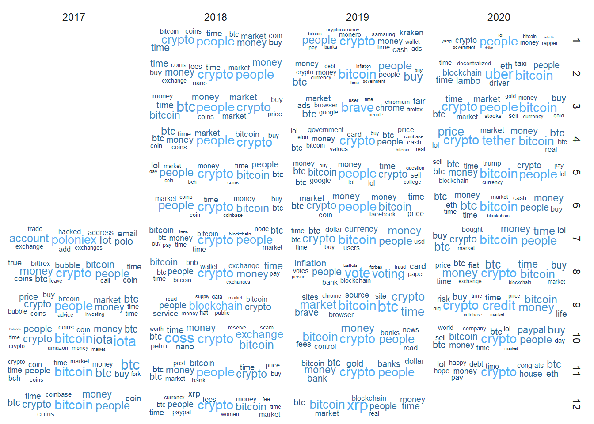
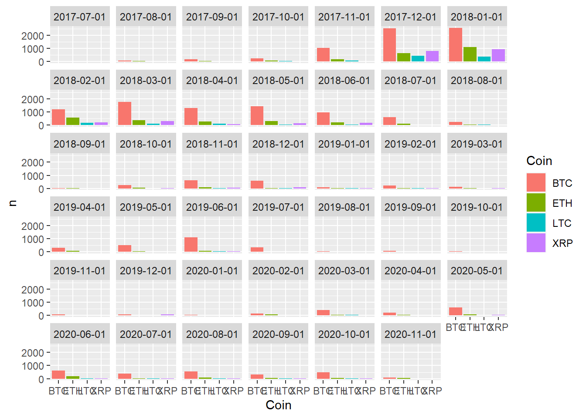

Section 3 Token Analysis
[In-Progress]
knitr::opts_chunk$set(message = FALSE, warning = FALSE, echo = TRUE)
# set to TRUE to run this on only one reference file
debugging <- FALSE
# this will expect the file or files to be in a subdirectory with the following name
refsource <- "MungingProj2"
dataDir <- "Proj2Data"
workingDir <- refsource
# prefixes for all File reads and writes
# titles for tables
titletext <- "RedditCrypto"
srs = c("CryptoCurrency","CryptoMarkets")
`%notin%` <- Negate(`%in%`)3.1 Import
3.2 Token Counts
3.3 Wordclouds
Wordclouds are then constructed using the top 50 words from each subreddit page.
3.3.1 All words (Submissions and Comments)
#sr_allCount <- allCount %>% filter(!subreddit == "r/all [control]")
sr_allWC <- allCount %>%
top_n(100) %>%
mutate(prop = n / max(n))
color=diverge_hcl(length(sr_allWC$prop))[rank(sr_allWC$prop)]set.seed(29)
ggplot(sr_allWC, aes(label = word, size = prop, color = prop)) +
geom_text_wordcloud_area(shape = 'circle', rm_outside = TRUE) +
scale_size_area(max_size = 30) +
#scale_colour_gradient2(low = "black", mid = "red4", high = "red", space = "Lab", aesthetics = "color") +
theme_minimal()TF_IDF is a tool used to show distinct word usage across groups by taking the difference between the term frequency tf and inverse document frequency idf, ultimately revealing the tokens that are most unique to each subreddit.
3.4 TF-IDF
allIDF %>%
group_by(subreddit) %>%
top_n(10) %>%
ungroup()%>%
ggplot(aes(word, tf_idf, fill = subreddit)) + geom_col(show.legend = FALSE) + labs(x = NULL, y = "tf-idf") + facet_wrap(~subreddit, ncol = 2, scales = "free_y") + coord_flip() + theme(axis.text.x = element_text(angle = 45, hjust = 1))
3.5 Posts over time
TknsByDate <- TknsC %>%
separate(created, c("created", "time"), " ") %>%
mutate(created = ymd(created)) %>%
mutate_at(vars(created), funs(year, month, day))TknsByMonth <-TknsByDate %>%
filter(year > 2015) %>%
mutate(Month = make_date(year, month))
monthCount <- TknsByMonth %>%
group_by(subreddit, month, year) %>% #group words by affiliation label
count(word, sort = TRUE) %>% #count and create column 'n'
top_n(10, n) %>%
ungroup()
monthCount <- monthCount %>%
group_by(subreddit, month, year) %>%
mutate(prop = n / max(n))
table(monthCount$subreddit)##
## CryptoCurrency CryptoMarkets
## 396 435ggplot(monthCount, aes(
label = word,
size = prop,
color = prop
)) +
geom_text_wordcloud_area(rm_outside = TRUE) +
scale_size_area(max_size = 5) +
theme_minimal() +
facet_grid(vars(month), vars(year))
3.6 Currencies
BTC <- c("Bitcoin", "bitcoin", "BTC", "btc", "Btc")
ETH <- c("Ethereum", "ethereum", "ETH", "eth", "Eth")
XRP <- c("Ripple", "ripple", "XRP", "xrp", "Xrp")
LTC <- c("Litecoin", "litecoin", "LTC", "ltc", "Ltc")
currencies <- c(BTC, ETH, XRP, LTC)
# For frequency analysis
CurTkns <- TknsByDate %>%
filter(word %in% currencies)
# For sentiment analysis
CurComms <- CommData %>%
filter(comm_id %in% CurTkns$comm_id)3.6.1 Assigning Identifiers
CurTkns <- CurTkns %>%
mutate(Coin = case_when(
.$word %in% BTC ~ "BTC",
.$word %in% ETH ~ "ETH",
.$word %in% XRP ~ "XRP",
.$word %in% LTC ~ "LTC"
))# Establish date column for grouping
curTknsByMonth <-CurTkns %>%
mutate(Month = make_date(year, month))
curCounts <- curTknsByMonth %>%
group_by(Coin) %>% #group words by affiliation label
count(word, sort = TRUE) %>% #count and create column 'n'
ungroup()
curCountsbyMonth <- curTknsByMonth %>%
group_by(Coin, Month) %>% #group words by affiliation label
count(word, sort = TRUE) %>% #count and create column 'n'
ungroup()
ggplot(curCountsbyMonth) +
geom_bar(aes(x = Coin, y = n, fill = Coin), stat = "identity") +
facet_wrap(~Month)